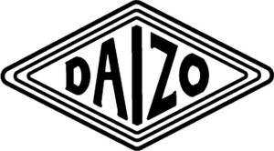

Trade Mark Journal No.2025/048 28 November 2025
WO0000001886330 (9,18,25)
Office of origin: Australia
Date of International Registration:25 August 2025
Date of designation in the UK:
25 August 2025

International priority date claimed: 6 August 2025
(Australia)
(2574166)
- Class 9
- Spectacles; spectacles for sports; fashion spectacles; spectacle cases; spectacle covers; spectacle straps; spectacles for children; parts for spectacles; cases for spectacles; chains for spectacles; straps for spectacles; polarizing spectacles; spectacle frames of metal and synthetic materials; hinges for spectacle frames; spectacles [optics]; spectacle frames; lenses for spectacles; spectacles, sunglasses and contact lenses; cases for spectacles and sunglasses; eyeglasses [optics]; tinted spectacle lenses with anti-reflective coating; sunglasses; lenses for sunglasses; eyeglasses and sunglasses; spectacles and sunglasses; frames for eyeglasses and sunglasses; straps for sunglasses and eyeglasses; ski glasses; chains for spectacles and sunglasses; anti-glare spectacles.
- Class 18
- Bags of leather; leather bags; bags made of leather; handbags of leather; leather handbags; pouches of leather; leather suitcases; leather bags, suitcases and wallets; leather bags and wallets; leather travel suitcases; luggage straps of leather; leather travelling suitcases; leather pouches; luggage tags of leather; garment bags for travel made of leather; baggage tags of leather; bags, of leather, for packaging; leather luggage straps; purses of leather; leather purses [handbags]; bags [envelopes, pouches] of leather, for packaging; leather purses; handbags made of leather; boxes of leather; leather and imitation leather bags; leather luggage tags; suitcases of synthetic leather; bags; leather bags for packaging jewellery; bags made of imitation leather; leather baggage tags; traveling bags [leatherware]; book bags; bags of leather for packaging jewellery; travelling bags [leatherware]; leather bags for merchandise packaging [envelopes, pouches]; bags [envelopes, pouches] of leather, for merchandise packaging; bags of imitation leather; bags made from imitation leather; bags of leather for packaging jewelry; luggage tags made of leather; leather bags for packaging jewelry; leather boxes; purses made of leather; traveling bags of imitation leather; leather tool bags, empty; hat boxes of leather; leather straps; travelling cases of leather; travelling bags of imitation leather; traveling bags made of imitation leather; suitcases made of synthetic leather; garment bags for travel for boots; bags for clothes; leather; leather adhesive tags for bags; leather shoulder belts; travelling bags made of imitation leather; bags for sportswear; pouches, of leather, for packaging; traveling cases of leather; bags for sports; shoulder belts [straps] of leather; bags made of leather for packaging jewellery; shoulder straps of leather; trunks and traveling bags; boxes made of leather; bags [envelopes, pouches] of leather, for packaging jewellery; leather cases; leather hat boxes; leather pouches for merchandise packaging; straps for bags; leather shoulder straps; leather briefcases; traveling bags; imitation leather bags; belt bags; bag straps; handbags of imitations of leather; boot bags for travel; bags for sports clothing; bags for sports wear; shoe bags for travel; wallets of leather; bags made of leather for packaging jewelry; garment bags for travel for shoes; straps for purses [handbags]; tool bags of leather, empty; purses [handbags] of imitation leather; travel bags in canvas; bags [envelopes, pouches] of leather, for packaging jewelry; sports bags; work bags; straps for handbags; travelling bags; trunks and travelling bags; carry-all bags; suitcases of imitation leather; wheeled bags; articles of luggage being bags; garment bags for travel, carriers for shirts and dresses; belt bags and hip bags; travel bags; briefcases [leather goods]; garment bags for travel; cases of leather; bags for men; key cases of leather; purses [handbags] made of imitation leather; string bags for shopping; leather wallets; woven bag; saddle bags; boxes of leather or imitation leather; all-purpose leather straps; hiking bags; handbags of imitation leather; attaché cases of leather; attache cases of leather; garment bags for travel for shirts and dresses; handbags made of imitations of leather; courier bags; adhesive tags of leather for textile bags; leather adhesive tags for textile bags; leather coin purses; shoulder bags; travel purses [handbags]; briefcases being document holders [leather cases]; canvas travel bags; men's bags; purses [leatherware]; duffel bags for travel; mesh bags for shopping; workbags; luggage; gym bags; all purpose luggage and bags with handles; leather credit card wallets; straps for luggage; knitted bags; imitation leather purses [handbags]; handbags made of imitation leather; leather for shoes; duffle bags for travel; frames for bags; woven bags; all-purpose luggage and bags with handles; carry-on bags; hunting bags; souvenir bags; credit card cases of leather; all purpose sports bags; all purpose baggage and bags with handles; artificial leather bags; canvas shopping bags; leather credit card cases; clothes covers for travel made of leather; key cases of leather and skins; key cases of leather or skins; bags for carrying pets; labels of leather; travel handbags; cases made of leather; bucket bags; multi-purpose sport bags; duffel bags; all purpose sport bags; luggage straps; textile shopping bags; multi-purpose sports bags; flexible bags for garments; wheeled shopping bags; coin purses of leather; imitation leather suitcases; travel garment covers made of leather; boxes made of leather for hats; handbag straps; waist bags; all-purpose baggage and bags with handles; straps for suitcases; mesh shopping bags; animal carriers [bags]; multipurpose purses [handbags]; canvas bags for carrying wood; imitation leather handbags; carrying bags; purses of imitation leather; grips [bags]; all-purpose sports bags; purses made of imitation leather; flight bags; grips for holding shopping bags; baggage; leather key cases; leisure bags; boxes of leather or leatherboard; terry cloth bags; all-purpose sport bags; suitcases made of artificial leather; suit bags for travel; luggage tags of rubber; school book bags; garment bags for travel for bridal gowns; canvas wood carriers [bags]; duffle bags; trunks and suitcases; hip bags; multi-purpose purses [handbags]; cross-body bags; envelopes, of leather, for packaging; bags for umbrellas; straps of leather [saddlery]; knitting bags; credit card wallets of leather; bags for school; adhesive tags made of leather for textile bags; kit bags; tags for luggages; all-purpose carrying bags; saddlebags; small bags for men; airline travel bags; hobo bags; luggage label holders [leatherware]; pyjama bags for travel; garment bags for travel for tuxedos; luggage, bags, wallets and carrying bags; pajama bags for travel; tags for baggages; garment bags for travel for wedding dresses; travel baggage; terrycloth bags; leather notecases; bags for climbers; wallets made of leather; briefcases [leatherware]; suitcase straps; leather envelopes for merchandise packaging; hunters' game bags; attaché cases made of leather; attache cases made of leather; travelling handbags.
- Class 25
- Clothing; women's clothing; suits [clothing]; ladies' clothing; tops [clothing]; knitwear [clothing]; clothing for ladies; dresses; girls' clothing; women's dresses; face masks [fashion wear]; clothing for girls; dresses [business wear]; clothing for women; fashionable face masks being clothing; ready-made clothing; casual clothing; fashionable face masks [clothing]; leather dresses; dresses for girls; smart clothing; girls' dresses; dresses for women; ladies' dresses; silk clothing; ready-to-wear clothing; lingerie; furs [clothing]; short sets [clothing]; articles of clothing; dress suits; denim dresses; bodies [clothing]; stuff jackets [clothing]; clothing made of leather; furs being clothing; folk costumes [clothing]; clothing of denim; ladies' suits; clothing made of silk; denim clothing; knit dresses; bottoms [clothing]; veils [clothing]; work clothing; skirts [business wear]; clothing of silk; clothing of leather; leather belts [clothing]; belts of leather for clothing; leather belts for clothing; leather jackets; belts made of leather [clothing]; leather suits; leather coats; leather gaiters; trousers of leather; pants made of leather; suits made of leather; women's footwear; ladies' footwear; footwear for women; dress shoes; clothing, footwear, headgear; clothing, footwear and headgear; leather clothing; leather shoes; leather trousers; bags for sneakers; shoes; shoes and boots; boots and shoes; shoes for men; heels for shoes; men's shoes; sneakers [footwear]; boots; ballet flats [shoes]; wooden shoes; sneakers; sandals; adult shoes; heels; boots for men; men's boots; rubber boots; boots for ladies; footwear, other than for sports; men's sandals; women's sandals; men's socks; rain boots; footwear made of wood; women's socks.
DAIZO PTY LTD
Representative: DAIZO PTY LTD, U 2 18 Head St, Brighton VIC 3186, AUSTRALIA